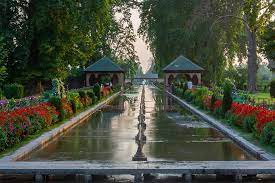

Kashmir paradise on Earth
The valley lies between the Karakoram Range and the Pir Panjal formed when the lake was drained during tectonic shift. It acquired the name of paradise on earth because of its uncanny resemblance with the garden of Eden described in religious and folk texts
All about kashmir
The beautiful Kashmir region is resplendent with white beauty in winter and the colors of nature in the autumn / fall, spring and summers. It is truly a ‘Paradise on Earth’ as it is called.
Once you step into the wonderful region, you will definitely wonder if you’re on the earth or you are looking straight at a huge picture postcard.
The waters of the Himalayas are so still and the mountains in the backdrop makes it one of the most picturesque places on this planet.
It makes the waters look silvery with a sheen that turns golden when the first sun rays reflect on these waters.
In the far sight, you can see the Great mountain ranges covered in mist and clouds while they merge into each other forming a ‘crest’. The deciduous gigantic Chinar trees found all over the valley coloring the streets with shades of yellow and red streaks especially during the pleasant autumn climate.
The leaves fall down on the ground making the streets soft to step on and almost turning the ground to yellow. This beautiful Paradise on Earth would definitely connect you with the nature.
Kashmir has so many places to visit some of them are as :
(1) Gulmarg :

Gulmarg, known as Gulmarag in Kashmiri, is a town, hill station, popular skiing destination, and notified area committee in the Baramulla district of Jammu and Kashmir, India. It is located at a distance of 31 km from Baramulla and 49 km from Srinagar.
One of the main tourist destinations in Kashmir is Gulmarg and there are a lot of places to visit in Gulmarg to be explored if you are an adventure seeker. According to the reports, now it is safe to travel there but one must take precautions and check for the information from State Government rules on the restriction to entry and exit the state border.
The month of January is within the winter months in Gulmarg. Here are some of the things that one can do in Gulmarg in January:
1. Experience skiing
2. Visit Alphar Lake
3. Enjoy a gondola ride
4. Enjoy hot Kahwa and wazwan
(2) Dal Lake :
Dal is a lake in Srinagar (Dal Lake is a misnomer as Dal in Kashmiri means lake), the summer capital of Jammu and Kashmir. The urban lake, is integral to tourism and recreation in Kashmir and is named the “Jewel in the crown of Kashmir” or “Srinagar’s Jewel”.The lake is also an important source for commercial operations in fishing and water plant harvesting.
The shore line of the lake, is about 15.5 kilometres (9.6 mi), is encompassed by a boulevard lined with Mughal era gardens, parks, houseboats and hotels. Scenic views of the lake can be witnessed from the shore line Mughal gardens, such as Shalimar Bagh and Nishat Bagh built during the reign of Mughal Emperor Jahangir and from houseboats cruising along the lake in the colourful shikaras. During the winter season, the temperature sometimes reaches −11 °C (12 °F), freezing the lake.
The lake covers an area of 18 square kilometres (6.9 sq mi) and is part of a natural wetland which covers 21.1 square kilometres (8.1 sq mi), including its floating gardens. The floating gardens, known as “Raad” in Kashmiri, blossom with lotus flowers during July and August. The wetland is divided by causeways into four basins; Gagribal, Lokut Dal, Bod Dal and Nagin (although Nagin is also considered as an independent lake). Lokut-dal and Bod-dal each have an island in the centre, known as Rup Lank (or Char Chinari) and Sona Lank respectively.The houseboats are closely associated with Dal Lake which provide accommodation to tourists in Srinagar.
(3) Nishat Bagh :
Nishat garden is the largest one of the Mughal gardens in Kashmir. It is situated on the banks of the picturesque Dal Lake. Also known as "the garden of bliss", the Nishat gardens have the Zabarwan Mountains forming its backdrop. Asaf Khan, the brother of Nur Jahan, designed the Kashmir Nishat Bagh in 1633 AD. Within the garden are ruins of some of the buildings dating back to the Mughal period. One of them is a double story pavilion enclosed on two sides with latticed windows. There is also a small spring behind the garden, known as Gopi Tirth. It is a source of supply of crystal clear water to the garden.
Nishat Bagh is a Mughal garden built on the eastern side of the Dal Lake, close to the Srinagar city in the state of Jammu and Kashmir. It is the second largest Mughal garden in the Kashmir Valley. The largest in size is the Shalimar Bagh, which is also located on the bank of the Dal Lake. Nishat Bagh is a Hindustani word, which means "Garden of Joy," "Garden of Gladness" and "Garden of Delight. Nishat garden is the largest one of the Mughal gardens in Kashmir. It is situated on the banks of the picturesque Dal Lake. Also known as "the garden of bliss", the Nishat gardens have the Zabarwan Mountains forming its backdrop.
Nishat Bagh of Kashmir, India, offers a splendid view of the Dal Lake as well as the snow capped Pir Panjal mountain range. The garden has terraces, each representing a different Zodiac sign. There is also a beautiful water channel flowing right in the middle of the garden. Other attractions of the Nishat garden of Kashmir include its blooming flowerbeds, trees, fountains, etc. You can also take a shikara ride at the Nehru Park from the garden. A famous picnic spot, Nishat Bagh also offers shopping facilities to its visitors. There are a number of shopping stalls situated opposite the garden. Nishat Bagh of Kashmir, India, offers a splendid view of the Dal Lake as well as the snow capped Pir Panjal mountain range. The garden has terraces, each representing a different Zodiac sign. There is also a beautiful water channel flowing right in the middle of the garden.
The brother of Mughal Empress Nur Jehan, Asif Khan laid the Garden in Srinagar in 1633. Set on the banks of world famous Dal Lake, in the backdrop of Zabarwan hills, this terraced garden offers some magnificent views of the lake. The Garden has a beautiful water channel flowing right through its middle. Not a minute in the garden can be dull with its gorgeous
Shikara rides up to the Nehru Park from here. The favorite picnic spot of the natives, a long walk amidst the lush greenery of this well-planned Garden refreshes oneself. There are also some shopping stalls opposite the garden.
(4) Shalimar Gardan :
Shalimar Bagh is a Mughal garden in Srinagar, linked through a channel to the northeast of Dal Lake, on its right bank located on the outskirts of Srinagar city in Jammu and Kashmir, India. Its other names are Shalimar Garden, Shalimar Bagh, Farah Baksh and Faiz Baksh, and the other famous shore line garden in the vicinity is Nishat Bagh. The Bagh was built by Mughal Emperor Jahangir for his wife Noor Jahan, in 1619. The Bagh is considered the high point of Mughal horticulture. It is now a public park. This time it’s also called as crown of Srinagar.
Emperor Jahangir built his celebrated Shalimar Bagh, his dream project to please his queen. He enlarged the ancient garden in 1619 into a royal garden and called it ‘Farah Baksh’ (‘the delightful’). He built it for his wife Nur Jahan (‘light of the world’). In 1630, under Emperor Shah Jahan’s orders, Zafar Khan the governor of Kashmir extended it. He named it ‘Faiz Baksh’ (‘the bountiful’). It then became a pleasure place for the Pathan and Sikh governors who followed Zafar Khan.
During the rule of Maharaja Ranjit Singh the marble pavilion was the guest house for European visitors. Electrification of the premises was done during Maharaja Hari Singh’s rule. Thus, over the years, the garden was extended and improved by many rulers and called by different names, but the most popular name ‘Shalimar Bagh’ continues to this day
. During the Mughal period in particular, Emperor Jahangir and his wife Nur Jahan were so enamoured of Kashmir that during summer they moved to Srinagar with their full court entourage from Delhi at least 13 times. Shalimar Bagh was their imperial summer residence and the Royal Court. They crossed the arduous snowy passes of the Pir Panjal mountain range on elephants to reach Srinagar(4) Botanical Garden :
Enhancing the beauty of Zabarwan Mountain and that of Srinagar, is the gorgeous Botanical Garden. Also known as Jawaharlal Nehru Memorial Botanical Garden, it is a beautiful tourist site that sprawls in an 80-hectare area.
The garden was created in the year 1969 and is divided largely in four sections, namely, Recreational Garden, Botanical Garden, Plant Introduction Center and Research Section.
It boasts a collection of about 150,00 ornamental plants and a huge collection of oak varieties along with a rare collection of Kashmiri tropical plants.
A nature lover’s delight, this top place to see in Srinagar experiences a riot of colour in the spring season which invites visitors to relish an extraordinary view.
(5) Pahalgam :
Pahalgam is famous for its scenic beauty and is the jewel of the picturesque Liddar valley in the high Himalayas. It provides an ideal setting for hiking, trekking, and fishing. It is also the starting point of the annual pilgrimage to the holy cave of Amarnath.
The origin of Pahalgam is obscure. Mughal rulers ruled this region in the medieval period. It was later a part of the Kingdom of Kashmir, which local Hindu rulers ruled. This princely state remained independent even during the British period and later merged into independent India.
Pahalgam is located in the western part of the state of Jammu and Kashmir, in the northern region of India. Situated at an altitude of 2130 m above sea level amidst the great Himalayan range, Pahalgam is positioned beside the Liddar River in the Liddar valley.
The weather in Pahalgam is alpine. Summers (April-June) are mild, while winters (November-February) are cold. It experiences rain between July and September. It experiences heavy snowfall from December to February.
Tourist Attractions in Pahalgam
Here are top 5 places to visit in Pahalgam -
Chandanwari
At 15 km from Pahalgam lies Chandanwari, the starting point of Amarnath yatra. You can enjoy snow sledding on a snow bridge here or have a picnic amidst nature.
Betaab Valley
Among the most important places in Pahalgam tourism, Betaab Valley is encircled by tall deodar trees and pine forests. The Lidder River flows through the valley. The Bollywood movie Betaab was shot here, featuring Sunny Deol and Amrita Singh, hence the name.
Aru Valley
Nestled 11 km from Pahalgam, visit Aru Valley on your Pahalgam trip. It is the base camp for trekking to the Kolahoi Glacier and the Tarsar-Marsar Lake. Horse riding, trekking, and hiking are famous activities here.
Kolahoi Glacier
This glacier is located over the Lidder River. Basically, it is a hanging glacier whose first view takes a visitor's breath away. You can reach here only by trek or hire ponies or horses to some parts.
Sheshnag Lake
Sheshnag Lake is the epitome of natural beauty and serenity. Snuggled by snow-clad mountains and tall alpine meadows, this lake is a paradise for peace seekers.
For more information, check out Kashmir on wikipedia
Tribute-Website Written and Design By Mohammad Umer Rather.